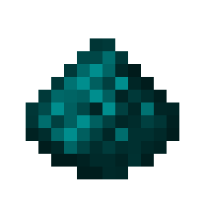
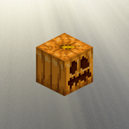
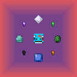

Java Mods
Cyanstone


Cyanstone is a mod that adds the ability to change the color of redstone and redstone blocks using a colormap in resource packs.

Roleplay Slot


Allows for the carved pumpkin to be placed in the hat slot. This is rendered like the vanilla head slot, and allows for custom CITs to be used.
Syncore



Tries to give all resources missing items and blocks, unless it doesn't make any sense. Some examples are copper nuggets or raw diamonds.
This mod is more meant to be used by other mods as a dependency, but you can use it standalone if you want.